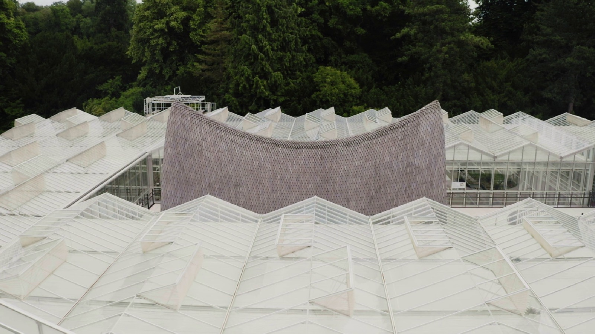

ARK

De biodiversiteit staat wereldwijd onder druk. Botanische tuinen proberen bedreigde plantensoorten voor uitsterven te behoeden door ze te onderzoeken, te bewaren en te beschermen. Ook Plantentuin Meise, vlak bij Brussel, vervult daarin een belangrijke rol. Maar de verouderde serres waarin de unieke plantencollectie wordt bewaard, zijn dringend aan vervanging toe.
Voor de nieuwe Groene Ark ontwerpen NU architectuuratelier, archipelago architects en ingenieursbureau Mouton een serrecomplex met een bijzonder paviljoen. Als een ark in een zee van serreglas biedt het bezoekers een inkijk in de beschermde collectie. De opvallende houten dakconstructie, geïnspireerd op geometrische vormen uit de natuur, stelt het bouwteam voor grote technische uitdagingen.
ARK volgt de totstandkoming van dit bijzondere gebouw, waarbij architecten, ingenieurs en aannemers voortdurend moeten samenwerken en onverwachte hindernissen overwinnen. Gaandeweg ontstaat een parallel tussen de natuur en het bouwproces: ook een bouwteam vormt een klein ecosysteem waarin iedereen van elkaar afhankelijk is.